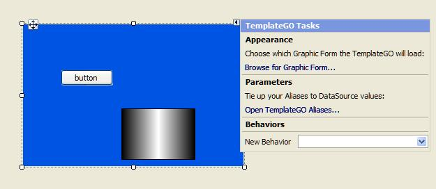

A TemplateGO (template graphic object) control allows you to display ( and can configure) an existing graphic form within another.
For more information and detailed procedures for this and other methods of re-using graphical components to speed up the process of creating graphic forms, see How to reuse graphical components.
This shows a TemplateGO control, that displays its associated
graphic form within the graphic form that has the TemplateGO control:

Through the use of aliases, the associated graphic form can expose certain
of its properties to the TemplateGO control, which you can configure just
like when you add a normal control, such as a button to graphic form.
Template
controls: If you need the SAME graphic form to connect to DIFFERENT
data. For instance: if a graphic form represents an item of equipment
that you have more than one of, such as a mill or a satellite. By configuring
aliases to expose the necessary properties you can re-use this graphic
form through the use of TemplateGO controls.
Tip: If you
need DIFFERENT data to connect to the SAME graphic form then use Spider
Template sets to connect the necessary data to the relevant properties,
then the currently active template set determines which set of data is
displayed.
Modular
or object orientated design: if many of your graphic forms are
composed of the same common elements, then create separate graphic forms
representing each element that may or may not need to have the relevant
configurable properties exposed through the use of aliases. Then simply
add TemplateGO controls to your graphic forms to display and or individually
customise these common elements.
Centralised
editing: if multiple TemplateGO controls refer to the SAME graphic
form then you can save time by only editing this graphic form and graphic
form that is displayed by each TemplateGO control can be immediately updated
with the changes.
Note: This
is a configurable per TemplateGO control, so if necessary you can prevent
this from occurring.
Navigation:
in this case the Template GO controls can be connected to other graphic
forms that users may want to move to. Although you can provide this functionality
by only using Template GO controls, the TemplateGONavToolbar controls
a specialised TemplateGO control that provides in-built functionality
to assist you in easily creating a graphic form navigational system.
Create the graphic forms
that you want to this control to display.
If necessary, add and associate
aliases to the properties of this graphic form and/or its form components
that you want to SEPARATELY configure in each TemplateGO control that
this graphic form is displayed in. For details, see Adding and
associating aliases to properties.
Decide whether you want
this control to initially be resized to the size of the graphic form it
contains, by configuring the Boolean AutoResize property. This
feature is disabled (False) by default.
Decide whether you want
the graphic form selected for this TemplateGO control to display any changes
that are made to its original after it has been contained or not, by configuring
the Boolean Subscribe property.
This feature is disabled (False) by default.
Note: It is
also possible to select the graphic form on which this TemplateGO control
has been added. Although in this case it is recommended that you configure
the MaxDepth property to specify the maximum number of instances
that its graphic form can be opened.
Assign data elements to
any aliasa property of a graphic form or its form components that is exposed, so that it can be independently configured when this graphic form is displayed within a TemplateGO control. configured in the referenced graphic form. For details, see Connecting
data elements to aliases.
Save the changes you have
made to this graphic form.
Test that the graphic form
displayed by this control works as desired in Run
mode.
A Tasks menu,
displayed when control is initially added and can be accessed from the
glyph of this control, allow you to select the required
graphic form and if necessary to configure its aliases.
Important
properties, this describes the functions of important properties used
to configure this control and/or its associated graphic form.
To connect data
elements to aliases: This describes how to assign data elements to
the aliasa property of a graphic form or its form components that is exposed, so that it can be independently configured when this graphic form is displayed within a TemplateGO control.
defined by the selected graphic form, if any.
End-user interaction
This is solely dependent upon the graphic form that it contains.
For details on how aliases can be used to allow you to configure specific properties of the graphic form you display within another, see Working with aliases.
For details of the TemplateGONavToolbar that allows you to create a graphic form navigational system, see TemplateGONavToolbar controls.

 Typical uses for TemplateGO control are:
Typical uses for TemplateGO control are:
 defined by the selected graphic form, if any.
defined by the selected graphic form, if any.